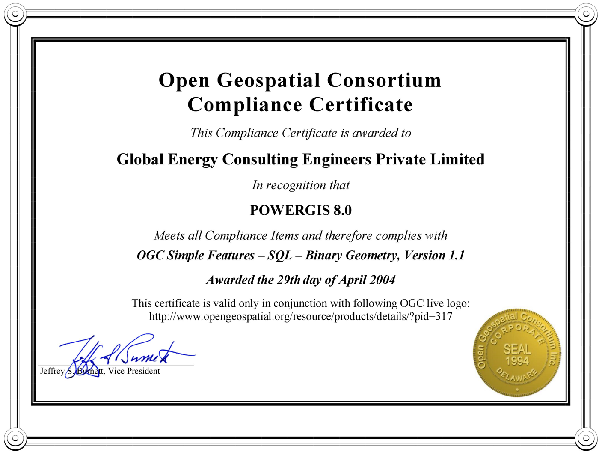
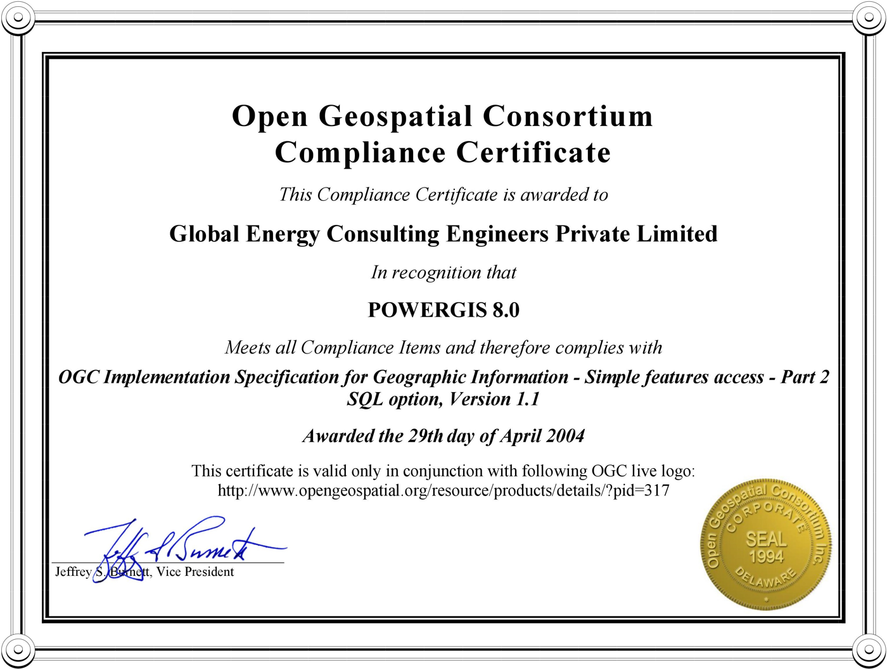

About GECE
Certifications
Independent recognition of the standards our products are built on.
Open Geospatial Consortium
OGC compliance for POWERGIS®
The Open Geospatial Consortium awarded Global Energy Consulting Engineers Private Limited compliance certificates for POWERGIS® 8.0 on 29 April 2004. They confirm that POWERGIS meets all compliance items of the OGC Simple Features SQL specification, version 1.1, so its GIS data can be exchanged with other standards-based GIS software.


Select a certificate to open it at full size. For a copy, contact GECE.